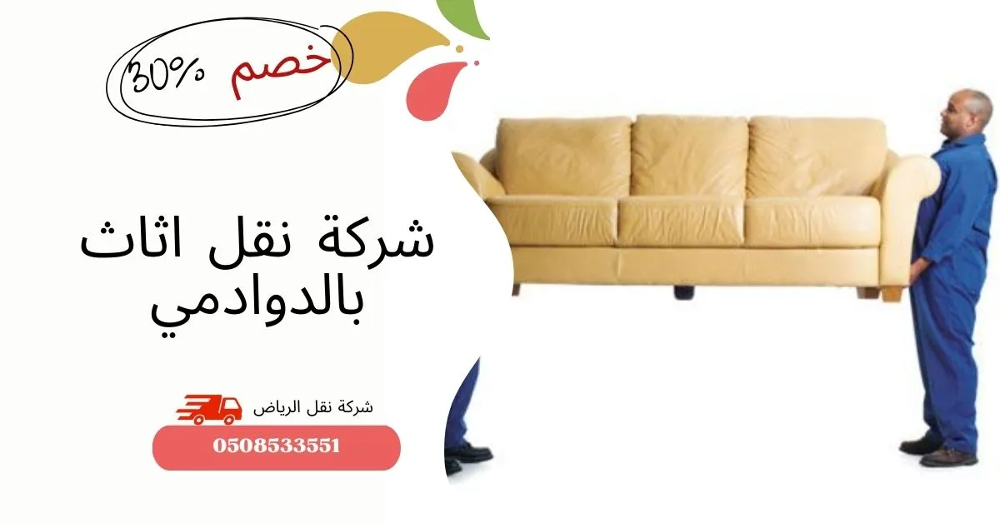

شركة نقل اثاث بالدوادمي

تعتبر شركة نقل اثاث بالدوادمي واحدة من أبرز الشركات المتخصصة في مجال نقل الأثاث في المملكة، حيث تتميز هذه الشركة بتقديم خدمات شاملة وعالية الجودة لجميع عملائها، مما يجعلها الخيار المثالي لكل من يبحث عن النقل السلس والآمن لأثاث منزله أو مكتبه، كما بتوافر أسطول من العربات الحديثة وفرق العمل المدربة، توفر الشركة خدماتها بسرعة وكفاءة لتلبية احتياجات العملاء بأفضل الأسعار.
شركة نقل اثاث بالدوادمي
يعد اختيار شركة نقل اثاث بالدوادمي واحدة، من أفضل الخيارات المتاحة للأفراد والشركات التي تحتاج إلى خدمات نقل موثوقة، فـ هي تتميز بتقديم خدمات نقل عفش بالرياض آمنة وفعالة، مع استخدام وسائل النقل الحديثة والعناية التامة بالأثاث أثناء نقله، كما يقوم فريق العمل المدرب بتنفيذ عملية النقل بأعلى معايير الأمان والاحترافية، حيث يتأكدون من أن جميع القطع يتم تغليفها وحمايتها بشكل جيد، سواء كان الأثاث من الخشب أو المعدن أو القماش، تتمكن الشركة من التعامل مع جميع الأنواع بطريقة آمنة وفعالة، كما أن أسعار النقل معقولة وتتناسب مع احتياجات العملاء المختلفة، تقدم شركة نقل اثاث بالدوادمي خدماتها لجميع العملاء في الدوادمي والضواحي، مما يضمن توفر الخدمة في أي وقت وحين.
أهمية شركات نقل اثاث
تعتبر شركات نقل الأثاث من العوامل الأساسية التي تسهم في تسهيل عملية الانتقال إلى منزل أو مكتب جديد بشكل آمن وسريع، يعتمد الكثير من الأفراد والشركات على هذه الشركات لتوفير الوقت والجهد في النقل، حيث تمتلك المعدات المتخصصة والفرق المدربة على التعامل مع الأثاث بكفاءة، كما تساهم شركات نقل الأثاث في تخفيف أعباء نقل القطع الثقيلة والسرعة في ترتيب الأثاث في المكان الجديد بشكل منظم وآمن، فـ هي توفر هذه الشركات أيضًا خدمات مثل التغليف والحماية من الأضرار أثناء النقل، مما يضمن وصول الأثاث بحالة جيدة.
أهمية شركات نقل الأثاث
- التوفير في الوقت والجهد: تساهم الشركات في إنجاز عملية النقل بسرعة، مما يوفر الوقت والجهد على الأفراد.
- حماية الأثاث من التلف: استخدام مواد تغليف متخصصة يقلل من فرص تلف الأثاث أثناء النقل.
- الاحترافية في التعامل: توفر الفرق المدربة كفاءة عالية في التعامل مع الأثاث الثقيل والمعقد.
- خدمات إضافية: مثل فك وتركيب الأثاث، مما يسهل عملية الانتقال.
أفضل شركة نقل عفش في المملكة
إذا كنت تبحث عن شركة نقل موثوقة وسريعة في المملكة، فإن شركة نقل الرياض هي الخيار الأمثل لك حيث أنها من افضل شركات نقل الاثاث في السعودية، حيث تقدم خدماتها بكل احترافية وموثوقية، كما تتميز الشركة بتقديم خدمات نقل سريعة وآمنة لجميع أنواع الأثاث من المنزل إلى المكتب أو العكس، مع مراعاة ضمان الحفاظ على سلامة الأثاث من أي ضرر خلال عملية النقل، تستخدم شركة نقل الرياض أفضل المعدات والتقنيات الحديثة التي تسهم في تسهيل عملية النقل وتوفير الوقت والجهد للعملاء.
من أبرز ما يميز شركة نقل الرياض هو كفاءة فرق العمل المدربة على أعلى مستوى، بالإضافة إلى توفير خدمة التعبئة والتغليف بطريقة احترافية لحماية الأثاث من أي خدوش أو تلف، تقدم الشركة أيضًا أسعارًا تنافسية تناسب مختلف الاحتياجات مع الحفاظ على الجودة العالية في تقديم الخدمة.
مميزات شركة نقل اثاث بالدوادمي
تقدم شركة نقل الأثاث بالدوادمي مجموعة من المميزات التي تجعلها الخيار المثالي للعملاء الذين يبحثون عن خدمة نقل آمنة وفعالة، فـ هي تقوم بتوفير خدمات النقل لجميع أنواع الأثاث سواء كانت صغيرة أو ضخمة، مما يجعلها قادرة على تلبية احتياجات كل عميل، كما أن الشركة تعتمد على فرق عمل محترفة ومدربة على أعلى مستوى لضمان سلامة الأثاث أثناء عملية النقل.
مميزات شركة نقل الرياض بالدوادمي
- التعبئة والتغليف الاحترافي: تستخدم الشركة مواد تغليف عالية الجودة لضمان حماية الأثاث من أي تلف.
- السرعة والكفاءة: تقدم الشركة خدمات النقل في وقت قياسي، مما يضمن لك إتمام العملية دون تأخير.
- أسعار تنافسية: توفر الشركة خدمات بأسعار مناسبة للجميع دون المساس بجودة العمل.
- مصداقية: تتمتع الشركة بسمعة طيبة في السوق بفضل التزامها بالمواعيد والاحترافية في الأداء.
- تأمين الأثاث: تقوم الشركة بتوفير تأمين على الأثاث المنقول ضد أي خسائر قد تحدث أثناء النقل.
خدمات شركة نقل الاثاث بالدوادمي
تقدم شركة نقل الأثاث بالدوادمي خدمات متميزة تضمن للأفراد والشركات نقل الأثاث بشكل آمن وفعال، يتمتع فريق العمل بالخبرة اللازمة لضمان أن كل قطعة من الأثاث تصل إلى وجهتها دون أي ضرر، بداية من التغليف باستخدام مواد عالية الجودة لضمان حماية الأثاث، وصولاً إلى استخدام الشاحنات المجهزة بنظام تعليق متطور للحفاظ على استقرار الأثاث أثناء النقل، كما توفر الشركة خدمات فك وتركيب الأثاث مما يضمن راحة العميل ويقلل من الوقت والجهد المبذول بالإضافة إلى ذلك، تقدم الشركة خدماتها بأسعار تنافسية، مما يجعلها الخيار الأمثل للعملاء الباحثين عن نقل آمن دون تحمل تكاليف مرتفعة.
أهم الخدمات التي تقدمها شركة نقل الرياض (الدوادمي)
- شركة اكتشاف تسرب الماء.
- نقل عفش بجميع مدن المملكة العربية السعودية.
- تنظيف المسابح البلاستيكية.
- ورس لمكافحة الحشرات والنمل الأبيض.
- تفكيك وتركيب مكيف سبليت.
- تنظيف منازل.
لماذا شركة نقل الأثاث بالدوادمي هي الاختيار الأفضل
اختيار شركة نقل الاثاث بالدوادمي هي خطوة الأمثل نظرًا للسمعة الممتازة التي تحظى بها في تقديم خدمات نقل الأثاث بين جميع مناطق المملكة، تتميز هذه الشركة بالاحترافية في التعامل مع جميع أنواع الأثاث، سواء كانت قطعاً كبيرة مثل الأرائك أو قطعاً حساسة مثل الزجاج أو الأثاث العتيق، حيث يتولى الفريق اهتمامًا خاصًا لكل مرحلة من مراحل النقل بدءًا من التفكيك والتغليف وصولاً إلى إعادة التركيب في الموقع الجديد، يتسم موظفو الشركة بالصدق والأمانة حيث يتم التعامل مع الأثاث بحرص شديد لضمان سلامته علاوة على ذلك، تلتزم الشركة بمواعيدها، ما يوفر راحة البال للعملاء.
الأسئلة الشائعة حول شركة نقل اثاث بالدوادمي
هل توفر شركة نقل اثاث بالدوادمي خدمات نقل داخلية وخارجية؟
نعم، تقدم الشركة خدمات النقل داخل الدوادمي وأيضًا إلى المدن المجاورة، مما يتيح للعملاء الاستفادة من خدمة نقل أثاث في المملكة شاملة.
هل يمكنني الحصول على خدمة نقل خلال عطلات نهاية الأسبوع؟
بالطبع، تقدم شركة نقل أثاث بالدوادمي خدماتها طوال الأسبوع بما في ذلك عطلات نهاية الأسبوع، لتلبية احتياجات العملاء في أي وقت.
كيف يمكنني التأكد من أن الأثاث سيصل سالمًا عند استخدام شركة نقل الأثاث؟
يمكنك التأكد من الأمان من خلال اختيار شركة محترفة تستخدم مواد تغليف عالية الجودة، وفريق عمل مدرب كما يجب أن تستخدم الشركة شاحنات مجهزة بشكل جيد للحفاظ على استقرار الأثاث أثناء النقل، مع توفير تأمين لضمان تعويض الأضرار إن حدثت.
في النهاية تضمن لك شركة نقل اثاث بالدوادمي، خدمة نقل مريحة وآمنة لجميع أنواع الأثاث من منزلك أو مكتبك، بالتعاون مع فرق عمل مهنية وحريصة على تقديم أفضل خدمة، يمكنك الاعتماد على الشركة لنقل أثاثك من وإلى أي مكان داخل وخارج المدينة، استخدام المعدات الحديثة والعربات الخاصة يضمن أن جميع الأثاث سيصل بأمان دون أي تلف، إذا كنت تبحث عن خدمة نقل أثاث موثوقة وسريعة، لا تتردد في التواصل مع شركة نقل اثاث بالدوادمي.